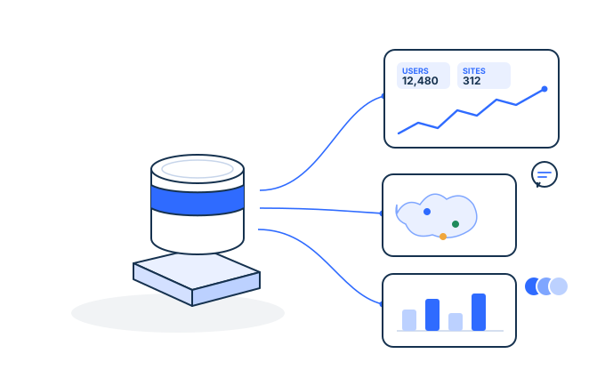

Data Discovery
A structured look at where your data stands today — sources, gaps, and the quickest wins. Often the first engagement.
Work with a team fluent in M&E, log frames, and funder reporting. We design the data systems your programmes rely on — and build your team's confidence to run them.

M&E frameworks, log frames, funder reporting — our consultants work in the language your programmes already speak.
The team that scopes your engagement stays through implementation, until the system runs in production.
Flat, transparent engagements scoped with you — no per-user or per-source fees on the platform underneath.
Every engagement is scoped with you. Platform plans start from Basic — see pricing.
A structured look at where your data stands today — sources, gaps, and the quickest wins. Often the first engagement.
A realistic roadmap from where your data is now to where your mission needs it to be.
Ongoing counsel for data decisions — tooling, governance, architecture, and hiring.
Training for M&E and program teams, so the systems we build together keep working after the engagement ends.
Assess where AI can help your programmes, and get your data ready for it.
Log frames, indicators, and collection formats that flow straight into your dashboards and reports.
Hands-on help connecting sources, cleaning data, and getting pipelines live in production.
For eligible nonprofits — one-on-one help mapping your data lifecycle and deciding what to build first.
Apply for Pro Bono ConsultingYes. Dalgo is more than a product. Separate consulting and implementation engagements can help define data questions and metrics, design a data architecture, build and validate data pipelines, create dashboards and reports, and support adoption. Learn more about Dalgo's consulting offerings.
Implementation is collaborative and usually follows these steps:
We start small enough to create early value, then expand in a controlled way.
Your team's involvement is essential, especially at the beginning. We need people who understand the programme, data collection, metric definitions, reporting expectations, and access approvals. Expect regular working sessions to validate data, make decisions, review dashboards, and prepare users for adoption.
Dalgo can take on substantial technical work, but the strongest outcomes come when programme, M&E, operations, and leadership teams actively participate in defining what the data should mean and how it will be used.
Yes. Through a separate consulting engagement, we can help identify priority decisions, stakeholders, data gaps, key metrics, governance needs, and a practical roadmap. Learn more about Dalgo's consulting offerings.
Training is available as a separate consulting offering and can be included in an implementation engagement. We tailor it to the people who will use and maintain the system: dashboard users, M&E and programme teams, analysts, administrators, or technical partners.
Training is most effective when paired with real workflows—such as regular review meetings, donor reporting, or data-quality follow-up—rather than a one-off demonstration. Learn more about Dalgo's consulting offerings.